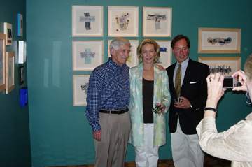
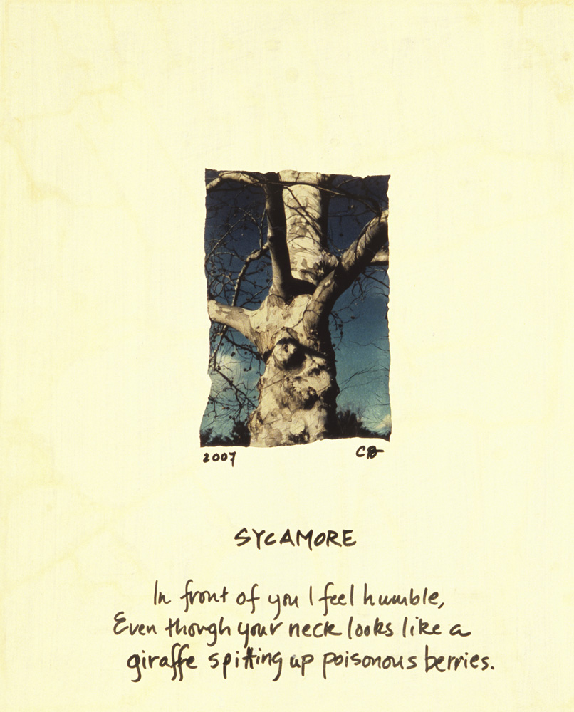

|
> Artists > Cary Brown > Images
Cary Brown

Images | Images 2 | Images 3 | Images 4 | Images 5 | Images 6 | Info
Alumni in the Arts Exhibition at the UVa Art Museum
Featuring Cary Brown
21 April - 3 June

Cary Brown, The Moo Piece
2007, polaroid emulsion lift and watercolor on paper
SOLD
Artist Statement
Cary Brown-Epstein
University of Virginia Art Museum
April 2007
| |
-Nature is a setting that fits equally well a comic or a mourning piece. |
| |
|
-Ralph Waldo Emerson |
I was lucky to grow up on a farm in Kentucky where I was free to explore nature at my whim. Whether I was climbing beech trees, scaling fossil beds, searching for turtles, gazing at the constellations, my head was always filled with the magic of nature.
I began to draw at an early age with one of my grandmothers (also a painter), who is a naturalist so our subjects were often things from the woods and on the farm: giant poplars, cows, donkeys, flowers, leaves, clouds and so on. She taught me that there was color in a shadow. Sometimes, I looked so hard I thought I could see wind.
I went on to study art here at U.Va and then on to New York City where I began lessons in portrait painting at the New York Academy of Art. During that time, I desperately missed the country so I began painting made-up landscapes in my studio. When my husband and I moved to Charlottesville in 1993, I was delighted to return to nature. I was captivated by the glimmering light of Charlottesville, especially in the Spring, and I began to paint en plein air in the style of my professor, Richard Crozier. My mediums were pretty much oils and the occasional watercolors.
After a life-threatening experience in 2005, I moved inward. I felt a need to take a closer look--a need to really feel and see life and death. I began to read a lot of poetry. My appetite grew for that big question: What is this all about? What is reality all about? What's going on above us, below us, around the back of a cone shell, in a wood pile, in the mind of an owl?
So began my journey with this new work. Having studied photography at U.Va, I was drawn to that medium again when contemplating reality. The Polaroid emulsion process (explained in detail below) was a perfect match: it enhanced the ephemeral qualities, the elements of surprise, and humor, in nature. And I was able to create wind! A bowl of cherries (irony included) in the kitchen window took on layers of reality-- and chaos and order. I wanted to freeze all of that so I could study it.
Gradually the work began to take on a life of it's own.
Through the process I began to consider the spirit in these objects-- the light, the love, the energy, the beauty, the magic-- in essence, the truth. I began by rolling out the Polaroid image(s) first on paper. Then I'd sit back and let the piece speak to me. A story evolved: I would see it, hear it, and then go in with color, form, and sometimes words and bring the piece alive.
After this I began to comprehend Emerson, Eiseley, and Dillard, all authors whose words were meaningful to me. I followed their assertion to really, really look and be a conscious witness. In this way so much more will be given to you.
I kept exploring and came to the woodpile on our farm of an old ash tree we had to cut down. Here I mourn her in six pieces. In the last piece, Pull the Night, I saw through a child's eyes, where the innocence is, real intuition. I began to think of dreams, time travel, and the cosmos, then I returned to my pot of boiling elements: wind and clouds bubbling in water, along with wood piles, sycamores, cows, land, dust, and the laws of nature. I began to laugh, and it was then I knew I had been restored-- my soul had been fed and magically returned to it's great capacity for joy.
| |
- ...man himself must be his last magician. He must seek his own way home. |
| |
|
-Loren Eiseley |
Polaroid Emulsion Lift Process
For these prints I used a Daylab printer to shoot my art work (a photograph or painting) on to 669 peel-apart Polaroid film. After the print dries for 8 hours, it is then boiled in distilled water for 3-4 minutes until the image begins to separate from its backing. The print is then transferred to a tray of cold water where the image is carefully rubbed off of it's backing. What is left is a sort of jelly-fish floating in the tray- a gooey emulsion version of the print. This image is then manipulated onto a Mylar sheet and delicately transferred onto wet water color paper (or receptor of choice) where it is rolled out with a wet brayer and left to dry. The final piece can be sprayed with UV protective coating like Krylon UV Clear.

Bazzle.Brown-Epstein.Jones, Alumni in the Arts
21 April - 3 June, UVa Art Museum 2007

Cary Brown, Her Armor was the Galaxy
2007, polaroid emulsion lift, watercolor, and colored pencil on paper
SOLD

Cary Brown, Bowl O' Cherries
2007, polaroid emulsion lift, watercolor, and gouache on paper
SOLD

Cary Brown, Sycamore
2007, polaroid emulsion lift and acyrlic on board
SOLD

Cary Brown, Ranunculus in Black
2007, polaroid emulsion lift and acrylic on board
Images | Images 2 | Images 3 | Images 4 | Images 5 | Images 6 | Info
|